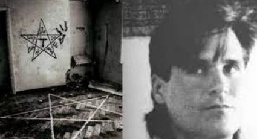
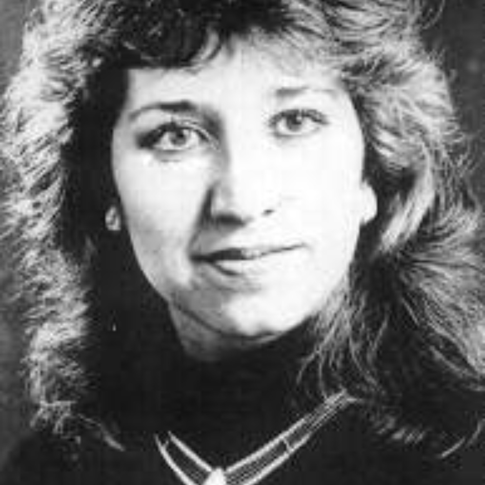

<!DOCTYPE html>
<html>

</html>

<head>
    <title>La historia de los narco satanicos.</title>
    <link rel="stylesheet" href="historia.css">
</head>

<body>
        <div class="tab-container">
            <div class="tab" onclick="window.location.href='inicio.html'"><b>Inicio</b></div>
            <div class="tab" onclick="window.location.href='historia.html'"><b>Historia</b></div>
            <div class="tab" onclick="window.location.href='ubicacion.html'"><b>Ubicacion</b></div>
            <div class="tab" onclick="window.location.href='homenajes.html'"><b>Homenajes</b></div>
        </div>
    <div class="content-container">
        <div class="titulo">
            <p><b><br>Narcosatánicos: Adolfo Constanzo y el grupo que generó pánico en la frontera México-EE.UU.
            </div>
            <div class="adlf">
            
        </div>
            <br><br>Adolfo de Jesús Constanzo nació el 1 de noviembre de 1962. Para los miembros de su culto era conocido
            como El Padrino, pero para el resto del mundo sería identificado como un narcotraficante, asesino en serie,
            y el líder de un culto bautizado como Los Narcosatánicos por la prensa.

            <br><br>Habría dirigido la organización criminal junto con Sara Aldrete, conocida como La Madrina.

            <br><br>Sus crímenes fueron tan impactantes que inspiraron desde una canción de una banda de metal japonés
            (entre varios grupos musicales) hasta documentales de Discovery Channel y una película protagonizada por
            Martha Higareda.

            <br><br>El culto estuvo involucrado en una serie de asesinatos y sacrificios rituales en la ciudad de
            Matamoros, en el estado norteño de Tamaulipas, en México.

            <br><br>Su asesinato más publicitado fue el de Mark Kilroy, un estudiante estadounidense asesinado en
            Matamoros en 1989.

            <br><br>Constanzo convenció a sus seguidores de que al consumir una bebida o pócima hecha con partes humanas
            podrían volverse invisibles e invencibles.

            <br><br>Todo concluiría en mayo de 1989 en la colonia Cuauhtémoc del entonces Distrito Federal.

            <br><br>La revelación no solo escandalizó a las autoridades, sino que desató una investigación que llevó al
            descubrimiento y la inspección de un departamento en la calle Río Sena, donde los agentes fueron recibidos
            con disparos de armas de fuego.

            <br><br>Algunos de los delincuentes intentaron escapar caminando, casualmente, junto a los policías: los
            seguidores de Constanzo creían en la idea que les había enseñado su líder. Pero no. Beber restos humanos no
            les dio el poder de ser invisibles y fueron arrestados.

            <br><br>El Padrino, cubano-americano, nació en Miami, Estados Unidos. Era hijo de Delia Aurora González, una
            cubana inmigrante que dio a luz a Adolfo cuando tenía 15 años. Tuvo tres hijos de diferentes padres. Cuando
            su primer esposo falleció, se mudó a San Juan, Puerto Rico, y allí se volvió a casar.

            <br><br>Constanzo fue bautizado en la religión católica y trabajó como monaguillo, pero también acompañó a
            su madre en viajes a Haití para aprender sobre el vudú haitiano. González era una sacerdotisa de la religión
            conocida como Palo Mayombe, desarrollada por esclavos de África Central llevados a Cuba.

            <br><br>Conocida también como Palo o simplemente Congo, la religión involucra ritos con sacrificios de
            animales. Se cree que todos los objetos naturales, especialmente los palos, tienen poderes conectados con
            espíritus.

            <br><br>El futuro asesino creció inmerso en esta doctrina y comenzó a cometer delitos como vandalismo, robo,
            y la venta de drogas.

            <br><br>Alrededor de 1983 a 1984, Adolfo Constanzo llegó a México. Algunos reportes indican que llegó para
            trabajar como modelo. No obstante, el haber crecido en una doctrina que incluía el sacrificio de seres vivos
            y el tráfico de narcóticos le ayudó a construir una reputación en Matamoros como mago y santero.

            <br><br>En la Ciudad de México también conoció a tres de los hombres que serían sus fieles seguidores: Omar
            Orea, Jorge Montes, y Martín Quintana. Pronto ganó notoriedad por su trabajo como sanador y médium o
            clarividente.

            <br><br>Se convirtió en un éxito rotundo. Personas de la alta sociedad de la Ciudad de México y la élite
            poderosa y los altos mandos de Tamaulipas, entre ellos narcotraficantes, comenzaron a valorarlo como un tipo
            de gurú y líder espiritual.

            <br><br>Era un negocio lucrativo donde cobraban por realizar hechizos para la buena suerte y otros más caros
            que requerían el sacrificio de animales que iban desde cabras y pollos hasta serpientes, cebras, y cachorros
            de león, según el libro Evil Serial Killers: In the Minds of Monsters, escrito por Charlotte Greig.

            <br><br>Comenzó a asaltar cementerios en busca de huesos humanos para su caldero. El culto sostenía la
            creencia de que los espíritus de los muertos en el también llamado nganga serían más poderosos si se
            utilizaban sacrificios humanos en lugar de cadáveres viejos.

            <br><br>Así empezaron los asesinatos: más de veinte víctimas cuyos cuerpos mutilados fueron encontrados en
            la Ciudad de México y sus alrededores.

            <br><br>El desarrollo eventualmente escaló hasta que El Padrino decidió que el culto necesitaba el cerebro
            de un estudiante estadounidense. Creía firmemente que sus hechizos, basados en la religión Palo Mayombe,
            eran responsables del éxito que tenían varios cárteles y organizaciones criminales.

            <br><br>Intentó asociarse como socio de negocios con una de las familias más poderosas que conocía, de
            apellido Calzadas, reveló Greig. Sin embargo, su oferta fue rechazada.

            
            
            <br><br>Siete miembros de la familia Calzadas aparecieron muertos sin sus cerebros, dedos, oídos, y, en un
            caso, sin la columna vertebral. El Padrino se relacionó y entabló amistad con un cártel emergente, los
            hermanos Hernández, y en 1987 reclutó a una joven llamada Sara Aldrete, quien se convertiría en la alta
            sacerdotisa del culto.

            <br><br>Aldrete, una estudiante con honores y porrista de la Texas Southmost College, era novia de Gilberto
            Sosa, un narcotraficante vinculado a los Hernández.

            <br><br>Constanzo designó a Aldrete como la segunda al mando, y quien dirigiría a los seguidores cuando él
            se encontraba traficando marihuana en la frontera con Estados Unidos.

            <br><br>También se convirtió en la principal reclutadora de nuevos miembros y víctimas. Reclutaba a personas
            mostrando la película The Believers, dirigida por John Schlesinger y protagonizada por Martin Sheen, un
            thriller del año 1987 en el que un culto en la ciudad de Nueva York realizaba sacrificios humanos para ganar
            dinero e influencias.

            <br><br>Según Rolling Stone, los miembros del culto eran obligados a ver la película una y otra vez como
            forma de adoctrinamiento y para familiarizarlos con la idea del sacrificio humano.

            <br><br>En 1988, Los Narcosatánicos se mudaron al Rancho Santa Elena en Matamoros. Era una casa en medio del
            desierto. Fue allí donde comenzaron a llevar a cabo asesinatos con rituales más sádicos y sangrientos.

            <br><br>En el rancho, donde también albergaban cargamentos de marihuana y cocaína, asesinaban a extraños y a
            miembros de cárteles rivales.

            <br><br>Fue el 13 de marzo de 1988 cuando la historia empezó a ganar notoriedad. Ese día desapareció un
            estudiante estadounidense de 21 años llamado Mark Kilroy, y cuyo homicidio y detalles desatarían pánico
            entre las autoridades de México y Estados Unidos.

            <br><br>Una búsqueda por los asesinos, coordinada entre ambos países, que terminaría con un enfrentamiento
            armado en las calles de Cuauhtémoc, en la capital del país.

            <br><br>Los secuaces de Constanzo secuestraron al estudiante Mark Kilroy en las afueras de un bar en
            Matamoros, Tamaulipas, y lo llevaron al rancho. El joven se encontraba en sus vacaciones de primavera.

            <br><br>Murió en las manos de El Padrino: de manera cruel, las autoridades mexicanas informaron que Kilroy
            fue asesinado con el corte de un machete en la parte trasera del cuello mientras intentaba escapar, 12 horas
            después de haber sido llevado al rancho, de acuerdo con The New York Times.

            <br><br>Durante esa noche, antes de su muerte, fue torturado y violado. Le quitaron su cerebro y lo
            hirvieron en una olla. Luego le insertaron un cable en su columna vertebral, para jalar los huesos una vez
            que su cuerpo estuviera descompuesto, le amputaron las piernas hasta las rodillas, y lo enterraron en el
            rancho junto con otros que habían sido asesinados antes que él.

            <br><br>La búsqueda de Kilroy comenzó como cualquier rutina de personas desaparecidas. Las autoridades
            estadounidenses y mexicanas pensaban que era un joven que aparecería un par de días después de la fiesta.

            <br><br>No obstante, señaló The Washington Post, su caso rápidamente cobró importancia y atención en los
            Estados Unidos porque su tío, Ken Kilroy, trabajaba en la Oficina de Aduanas y Protección Fronteriza.

            <br><br>Con la presión del gobierno estadounidense, las autoridades mexicanas instalaron un punto de
            inspección en la Carretera Federal 2, que conecta Matamoros con Reynosa. Ahí, detectaron a un sujeto llamado
            Serafín, el mismo que había secuestrado, junto con otros hombres, a Kilroy semanas antes.

            <br><br>Serafín Hernández García y otros sospechosos capturados guiaron a la policía al Rancho Santa Elena
            para mostrarles dónde habían enterrado los restos humanos de sus víctimas. A punta de pistola, fueron
            obligados a desenterrar los cuerpos por horas.

            <br><br>Tras la excavación, los seguidores del culto exhumaron 15 cadáveres mutilados, incluyendo el de Mark
            Kilroy. De acuerdo con Los Angeles Times, todos eran varones asesinados durante un período de nueve meses.

            <br><br>Tulsa World reportó en ese entonces que los investigadores concluyeron que la mayoría de las
            víctimas fueron narcotraficantes rivales de Constanzo, y no víctimas al azar para sacrificar por el culto.

            <br><br>Mark Kilroy fue elegido al azar porque Constanzo ordenó a sus seguidores encontrar a un hombre
            blanco y angloparlante para sacrificar. Un gringo.

            <br><br>Tres de los 15 cuerpos nunca fueron identificados. En el rancho, la policía también encontró
            cargamentos de marihuana, cocaína, armas de fuego, y vehículos con teléfonos incorporados, un lujo en esa
            época.

            <br><br>Los Narcosatánicos no solo dejaron una marca en la historia criminal de México, sino que su caso se
            convirtió en un tema de profundo interés en medios de comunicación y cultura popular. El culto, liderado por
            Adolfo de Jesús Constanzo, representaba una fusión perturbadora de crimen, vudú y narcotráfico que capturó
            la atención global.

            <br><br>Después del enfrentamiento en el departamento de la calle Río Sena, las autoridades continuaron con
            la investigación y el procesamiento judicial de los detenidos. Sara Aldrete, conocida como La Madrina, fue
            una figura central en la cobertura mediática del caso. A pesar de sus negaciones, su implicación en el culto
            y el tráfico de drogas quedó clara, y su autobiografía Me dicen la narcosatánica ofreció una perspectiva
            controvertida sobre su participación y el funcionamiento interno del culto.

            <br><br>La vida en prisión de los miembros del culto siguió siendo objeto de interés. Omar Francisco Orea
            Ochoa, quien había sido uno de los líderes de los seguidores de Constanzo, murió el 11 de febrero de 1990
            por complicaciones relacionadas con el SIDA. Su muerte marcó un final trágico para uno de los personajes más
            notorios del culto.

            <br><br>Mientras tanto, las investigaciones continuaron para dar con los fugitivos Ovidio Hernández García y
            Malio Fabio Ponce Torres. Estos individuos, quienes habían jugado roles importantes en el culto,
            permanecieron prófugos durante muchos años, convirtiéndose en símbolos de la fuga de justicia que rodeaba el
            caso.

            <br><br>El impacto de Los Narcosatánicos se sintió a nivel internacional. Documentales y reportajes
            detallaron los horrores de los rituales y el tráfico de drogas del culto, y su historia fue dramatizada en
            diversas producciones cinematográficas. La fascinación por el culto reflejó un interés por los fenómenos
            criminales extremos y las dinámicas del poder y la creencia en rituales oscuros.

            <br><br>Hoy en día, Los Narcosatánicos siguen siendo un recordatorio escalofriante de cómo la desesperación
            por el poder y el control puede llevar a individuos a cometer atrocidades inimaginables. La historia de
            Constanzo y su culto permanece como un oscuro capítulo en la historia del crimen, con su legado marcando una
            profunda impresión en la memoria colectiva.</b></p>
    </div>
</body>